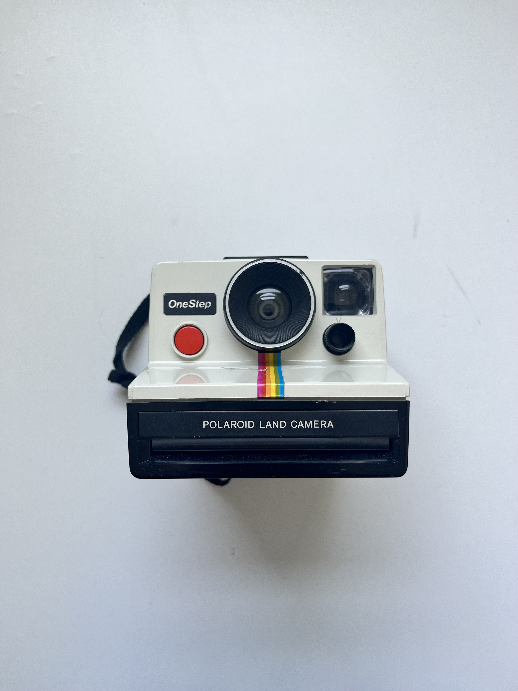

Polaroid Land Camera

This "ancient" piece of technology has no clear owner or origin, it circulated through several members of my family while I was growing up.
When I was little, I didn't care too much for photography or capturing moments, because when you're little, you don't worry about trying to remember certain ones; sometimes you just do.
I remember once my oldest brother taught me how to peek through the lense and take a photo. The last picture I remember taking is of my late childhood dog, Coco.
Polaroids were the initial instant cameras, the only way people could capture memories. Now, as the film for this camera is no longer in production, it sits atop my bookshelf solely for display. As time passes, shaking a polaroid picture and passed pets become nostalgic.
Artifact Metadata
| Type | Description |
|---|---|
| Name | Polaroid Land Camera |
| Collection | Electronics |
| Origin | Belongs to family |
| Date | N/A |
| Location | Markham, ON |
| Condition | Used - Good. No film. |
| Colour | Black, Cream, Red, Yellow, Blue, Pink. |
| Material | Plastic, Glass, Metal, Rubber, Silicone |
Archival Record: ARC-2026-003
"In a digital world where images are infinite and invisible, this camera represents the value of the singular. It is the antithesis of the 'delete' button. To use it is to accept a moment exactly as it happens—blur, light leaks, and all. This object likely sat on bookshelves or was brought out for specific, high-stakes celebrations where the goal wasn't just to record a memory, but to hand someone a physical piece of it. It’s a machine that demands patience, standing in contrast to the rapid-fire nature of modern tech, reminding the owner that some things are worth waiting for while the colors slowly emerge from the gray."
Artifact Metadata
| Field | Description |
|---|---|
| Object Name | Instant Film Camera |
| Make/Model | Polaroid OneStep (Land Camera) |
| Material | Rigid plastic (Cream and Black), glass/plastic lens, nylon neck strap |
| Distinguishing Marks | Signature vertical "Rainbow" stripe; Red shutter button |
| Film Type | SX-70 or 600 (with ND filter) |
| Condition | Good; surface-level dust and minor scuffs consistent with vintage age. |